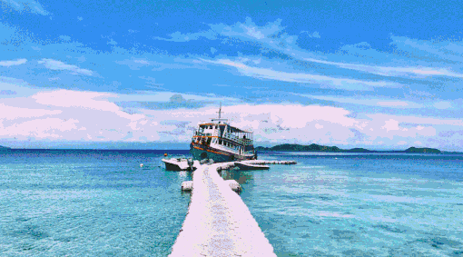

Phuket
Phuket province is located in southern Thailand. It is the biggest Island of Thailand and sits on the Andaman sea. The nearest province to the north is Phang-nga and the nearest provinces to the east are Phang-nga and Krabi. Phuket has a large Chinese influence, so you will see many Chinese shrines and Chinese Restaurants around the City. A Chinese Vegetarian Festival is held there every year. While the Chinese community is quite big, there are many other ethnicities bringing all their traditions and festivals from all over the world to Phuket.
Top Three Reasons We picked Our Topic
- beautiful sea
- moderate weather
- no air pollution